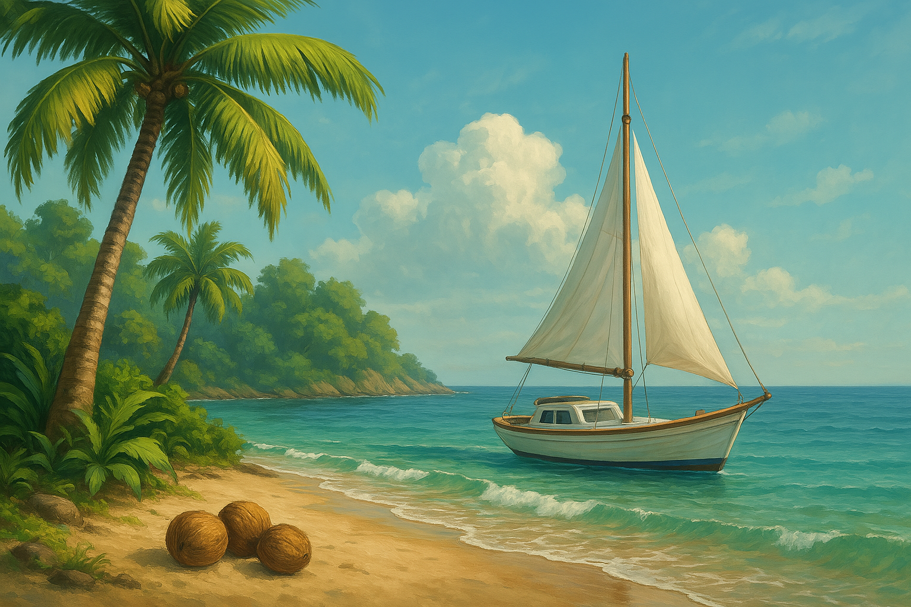

Isla Actual
Explorando esta isla...
Ubicación actual: Cargando...
Estado del barco: Cargando...
Destino:
Isla del Tesoro
Bahía de los Piratas
Arrecife de Coral
Isla Volcánica
Puerto Comercial
Zarpar